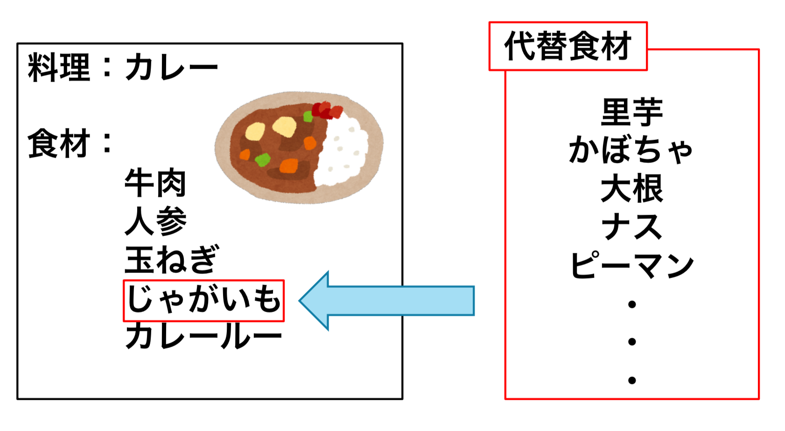

Food Replacer
レシピを見ながら料理を作る際に，あまり売られていない食材や手元にない食材が使われていることはありませんか？Food Replacerは，類似するレシピで使われている類似する食材を提示してくれるWebアプリケーションです．いつもと違う食材を使う，アレンジ料理の参考にもすることができます！WSSIT2018で発表した研究内容の実装になります（現在公開停止中）．

Healthy Recipe!
健康を意識して料理をしてみませんか？Healthy Recipe!では完全自動でインターネット上の料理レシピの栄養素量を計算し，1日に必要な栄養素のどれだけを摂取できるのかを調べることができるWebアプリケーションです。より正確な計算をするために，手作業での修正もすることができます．WSSIT2019で発表した研究内容の実装になります．
Own Server
近年，クラウドサービスが流行していますが，あえて自分でサーバを買って運用しています．Webページ（https://umeco.co）や，umeco.coメールアドレスは，このサーバによって動作しています．